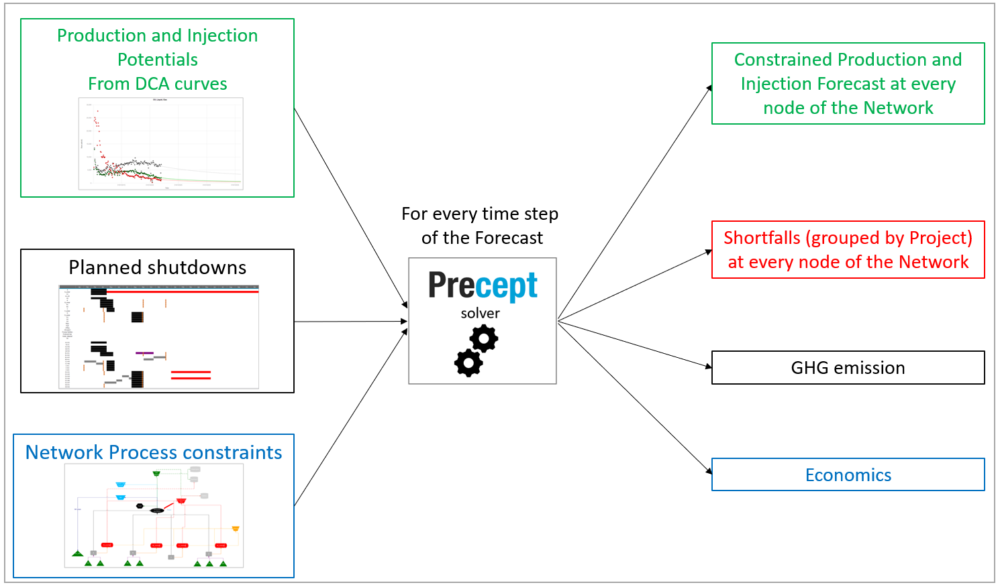
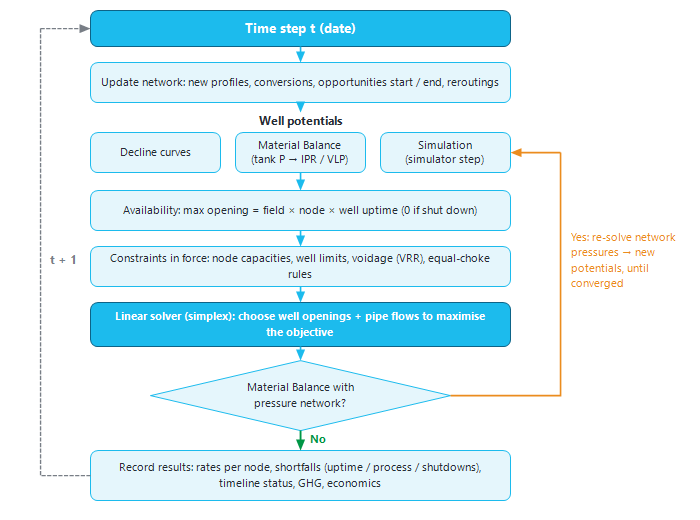
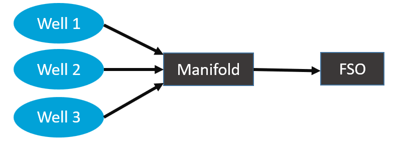

|
Forecast calculations
1. Overview
A Precept forecast is a sequence of time steps. At each step, Precept knows what every well could produce or inject (its potential) and what the surface network can handle (its constraints). The Precept solver then decides how much each well actually flows, so that every constraint is respected and the objective is as high as possible.

Click "Deterministic" in the "Forecast" group of the main ribbon to run the forecast of the selected scenario (if the scenario already has results, Precept asks "Are you sure you want to run forecast?"). "Probabilistic" runs the same calculation many times with uncertain inputs (see Probabilistic forecast). A progress bar shows the date being solved.
2. Time steps
The forecast runs from the scenario's forecast start date to its end date. Precept does not solve every day. It places time steps:
•at the start of each month (or each quarter, depending on Settings) until the year set in "Yearty Time step after:" in Settings, then at the start of each year;
•on every event date: the start and end of each opportunity, new profiles coming online, well conversions, reroutings, and changes in Constraints vs time;
•on every day, when "Daily time step" is ticked in Settings. Daily steps are limited to forecasts of less than about 180 days.
3. What happens at one time step

Figure 1 — The calculation at one forecast time step.
1.Update the network. Precept checks whether a new profile comes online, a well is converted, or an opportunity starts or ends (see New profiles and Opportunities).
2.Compute each well's potential, according to the scenario's "Decline" setting: "Decline curves" — read from the well's decline curve (see Decline curves: Production and Injection potentials); "Material Balance" — from the tank pressure, the inflow and the lift curve (see Material Balance); "Simulation" — from a reservoir simulator coupled step by step (see Simulator coupling).
3.Apply availability. A well's maximum opening is its uptime: field uptime × node (manifold) uptime × well uptime. A well closed by a shutdown, or not yet drilled, has a maximum of 0 (see Shutdowns). Field uptime is set with "Uptime" and "Field uptime (fraction) :" in Settings and can change over time through Constraints vs time.
4.Apply the network constraints in force on that date: node capacities, well rate limits, and the voidage rule (section 4).
5.Solve. The linear solver chooses each well's opening to maximise the objective.
6.Material Balance with a pipeline network ending at a fixed-pressure node only: re-solve the pressures. The network pressures are recomputed from the flows just decided, the well potentials are recomputed at those pressures, and the solver runs again, until the pressures stop changing.
7.Record the results of the step (section 5), then move to the next step.
4. The optimisation problem
At every step, Precept builds a linear programme and solves it with the simplex method. Its parts are:
•Known values — the potential of each well for each stream (oil, water, gas, gas-lift, water injection, gas injection).
•Unknowns — one opening per well (between 0 and its uptime), and the flow of each stream in each pipe between two nodes.
•Conservation at each node, for each stream — what flows in = what flows out.
•Constraints — the capacities of the nodes (maximum oil, water, gas, liquid, gas-lift, water or gas injection), well rate limits, and any special modelling rules of the network. They are set in the Network and in Constraints vs time.
•Voidage — when "Play with injection to keep VRR =1 per reservoir" is ticked in Settings, in a reservoir forecast with decline curves the injection (in reservoir barrels) is limited to the target voidage replacement ratio × the produced voidage. In a Material Balance reservoir, injection is not capped this way: the tank pressure responds to it (see Material Balance).
•Optional equal choke opening — per well type (producers, water injectors, gas injectors), Settings offers "Optimize each well individually", "Equal choke opening within each reservoir" or "Equal choke opening across the whole asset".
•Objective — set in the "Objective Function" box of Settings: maximise a stream (Liquid, Oil, Water, Gas, Total Gas, Water Injection or Gas Injection) arriving at a chosen node (click "Add" to add a term), or maximise "Net cash flow".
4.1 A worked example
Three wells flow oil to a node called "Manifold". A pipeline connects "Manifold" to a node called "FSO", which cannot process more than 100,000 bopd.

|
Part
|
In the example
|
|
Known values
|
The oil potentials of the three wells at this date: Pot_Oil_Well_1, Pot_Oil_Well_2, Pot_Oil_Well_3.
|
|
Unknowns
|
The openings Choke_Well_1, Choke_Well_2, Choke_Well_3, and the pipeline flow Oil_from_Manifold_to_FSO.
|
|
Conservation at "Manifold"
|
Choke_Well_1 × Pot_Oil_Well_1 + Choke_Well_2 × Pot_Oil_Well_2 + Choke_Well_3 × Pot_Oil_Well_3 = Oil_from_Manifold_to_FSO
|
|
Well constraints
|
0 ≤ Choke_Well_i ≤ uptime of well i (1 when the well is fully available).
|
|
Node constraint
|
Oil_from_Manifold_to_FSO ≤ 100,000
|
|
Objective
|
Maximise Oil_from_Manifold_to_FSO ("Oil" at "FSO").
|
|
Solution
|
If the three potentials add up to less than 100,000 bopd, every well is fully open. Otherwise the wells are choked back until the FSO receives exactly 100,000 bopd; the FSO is then "Oil constrained" on the timeline.
|
The same problem is built again at every time step, with that date's potentials and constraints.
5. Forecast outputs
•Constrained production and injection at every node of the network, per stream, plus well pressures when a pressure model is used. They can be grouped by project, reservoir or pattern in the results.
•Shortfalls (when "Calculate future losses" is ticked in Settings): the potential lost to uptime (potential × (1 − field uptime × node uptime)), to process constraints (what the solver choked back), and to each shutdown project.
•The status of every node and well at every step, shown on the timeline (see Forecast results: Timeline).
•GHG emissions, when "GHG emission" is ticked in Settings (see GHG emission).
•Economics (OPEX, CAPEX, sales, net cash flow), when "Calculate Economics" is ticked in Settings (see Economical screener).
To review the results, see Forecast results.
|